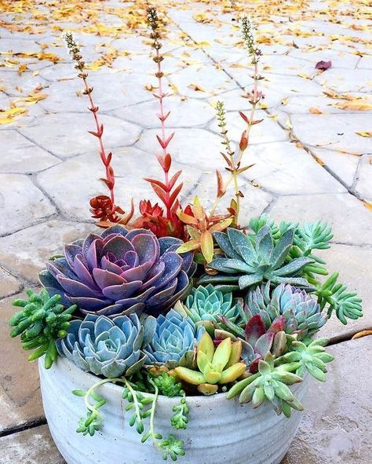
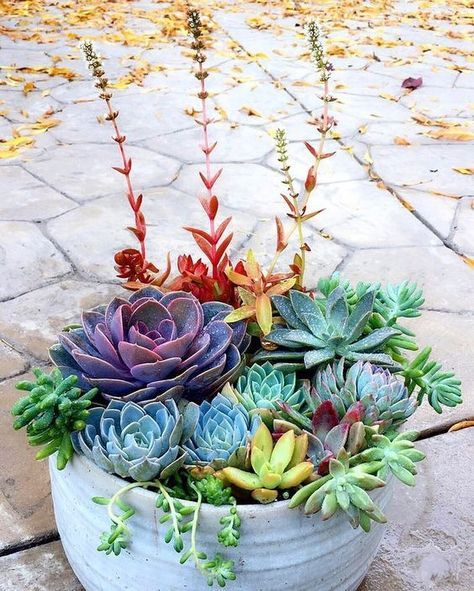

suculentus, suculenta, suculentum
Not to be confused with cactus; nearly all cacti are succulents but not all succulents are cacti.
A general definition of succulents is that they are drought resistant plants in which the leaves, stem or roots have become more than usually fleshy by the development of water-storing tissue.[3] Other sources exclude roots as in the definition "a plant with thick, fleshy and swollen stems and/or leaves, adapted to dry environments."[4] This difference affects the relationship between succulents and "geophytes" – plants that survive unfavorable seasons as a resting bud on an underground organ.[5] These underground organs, such as bulbs, corms and tubers, are often fleshy with water-storing tissues. Thus if roots are included in the definition, many geophytes would be classed as succulents. Plants adapted to living in dry environments such as succulents are termed xerophytes. However, not all xerophytes are succulents, since there are other ways of adapting to a shortage of water, e.g., by developing small leaves which may roll up or having leathery rather than succulent leaves.[6] Nor are all succulents xerophytes, since plants like Crassula helmsii are both succulent and aquatic.[7] Those who grow succulents as a hobby use the term in a different way to botanists. In horticultural use, the term succulent regularly excludes cacti. For example, Jacobsen's three volume Handbook of Succulent Plants does not cover cacti,[8] and "cacti and succulents" is the title or part of the title of many books covering the cultivation of these plants.[9][10][11] However, in botanical terminology, cacti are succulents.[3] Horticulturists may also exclude other groups of plants, e.g., bromeliads.[12] A practical, but unscientific, horticultural definition is "a succulent plant is any desert plant that a succulent plant collector wishes to grow."[13] Such plants less often include geophytes (in which the swollen storage organ is wholly underground) but do include plants with a caudex,[14] which is a swollen above-ground organ at soil level, formed from a stem, a root or both.[5]


 
